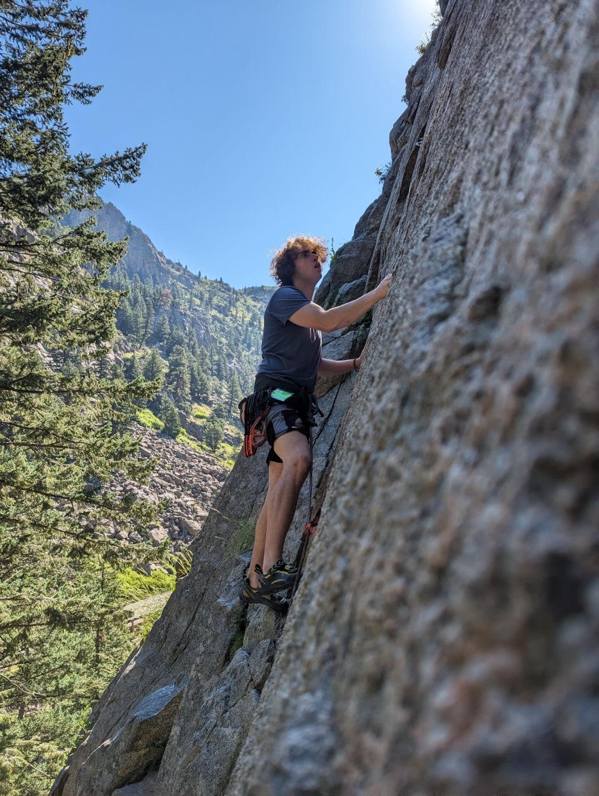
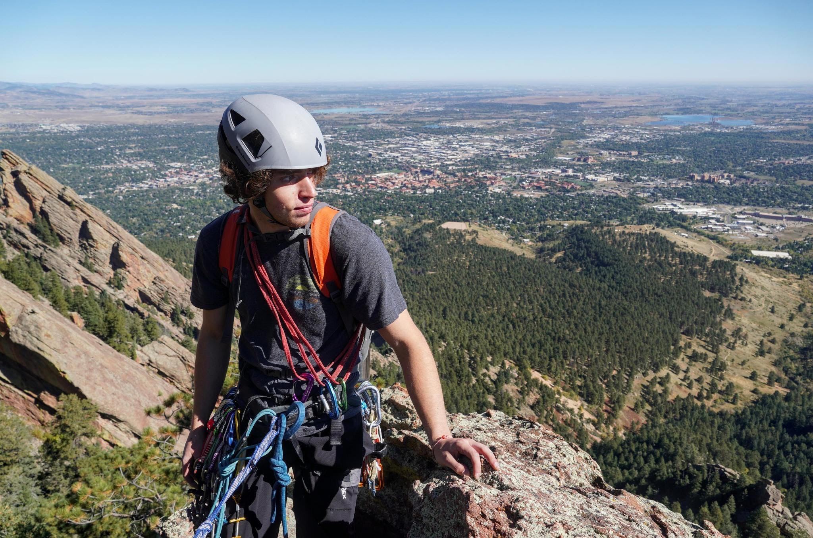

I started climbing consistently in 2019 at Central Rock Gym in Stoneham, MA as a form of physical therapy for a torn meniscus.I loved the ability to solve problems on the wall using various methods, and was inspired to spend more time in the gym getting stronger. I quickly became a known regular to the staff and setting crew, and was eventually offered a job stripping boulders.


ABC Kids Climbing, Boulder CO
- Team Rock Stars Coach
- Develop training routines for young athletes.
- Teach athletes strategies and techniques for competitive climbing.
- Inspire good sportsmanship in students while maintaining a passion for success.
- Setting Crew
- Set boulders for both recreational and competitive programs.
- Set top rope climbs for various levels of athletes to practice.
- Forerunning competition-style boulders for team training camps.
Central Rock Gym, Stoneham MA
- Setting Crew.
- Stripped bouldering and rope climbing walls.
- Utilized ladders, rope rigs, and a lift to strip climbs.
- Assisted in setting boulders and forerunning.
- Summer camp counselor.
- Group management
- Conducted group games
- Managed and monitored youth belay.
- Desk Staff
- Managed member check in/out.
- Rock Gym Pro sales
- Monitored gym safety
- Conducted lead and top rope belay tests

Most of my free time is spent either training to be a better climber myself, or looking for ways to make a living from from the sport. Working for ABC Kids Climbing in Boulder, I hope to gain skills as both a coach and climber. By working as Outdoor Assistant Guide, I aim to gain traditional climbing as well as guiding skills. One day, I would like to have my AMGA Single Pitch Instructor certification.